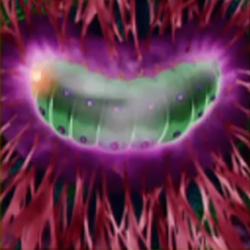

Larva of Moth

Description: "Cannot move. Transforms into Pupa of Moth if this card survives 5 turns in face-up, defense position after being flipped face-up by the controlling player. If destroyed prior to transformation, the card is revived as Larvae Moth in own Summoning Area other than current location."
STATS
ATK: 0
DEF: 2000DECK COST
Deck Cost per Card: 25EFFECT NOT IMPLEMENTED